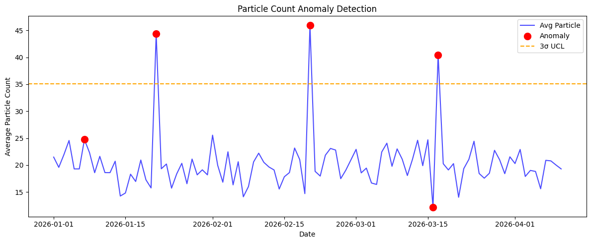

Particle Count Anomaly Detection

결과 해석 · 공정 관점
시간 순서의 Particle Count와 탐지된 이상 구간을 함께 표시했습니다. 관리 한계를 벗어난 구간은 세정 장비 상태, 소모품, 전후 공정의 오염원을 우선 점검할 후보입니다.
세정 공정의 Particle 데이터를 기반으로 정상적인 공정 변동과 비정상적인 이상치를 구분하고, 이상 발생 시점과 설비를 탐색한 프로젝트입니다.
세정 공정은 웨이퍼 표면의 Particle과 오염원을 제거하는 단계이므로, Particle Count의 급격한 증가는 후속 공정의 결함 발생 가능성과 연결될 수 있습니다.
날짜별 평균 Particle Count를 시계열로 정리하여 공정 상태의 변화와 급격한 증가 구간을 확인하도록 구성했습니다.
AVG_PARTICLE과 MAX_PARTICLE을 입력 변수로 사용하여 Isolation Forest 모델을 적용했습니다.
모델은 일반적인 데이터 패턴에서 벗어난 관측값을 이상 데이터로 분류하도록 구성했습니다.
평균 Particle Count와 표준편차를 이용해 평균 + 3σ 기준을 계산하고, 머신러닝 기반 이상 탐지 결과와 함께 비교했습니다.
이상으로 탐지된 데이터의 날짜와 TOOL_ID를 함께 출력하여, 특정 시점과 설비에서 반복적인 Particle 증가가 발생하는지 확인할 수 있도록 했습니다.
Particle Count가 평소 수준에서 갑자기 증가한다면 단순 측정 오차뿐 아니라 설비 오염이나 세정 성능 저하 가능성을 함께 검토할 수 있습니다.
이상 시점의 TOOL_ID를 PM 일정, 약액 교체 시점, 장비 점검 이력과 연결하면 Root Cause 후보를 빠르게 좁힐 수 있습니다.
3σ와 같은 통계적 관리 기준과 Isolation Forest 기반 이상 탐지를 함께 활용하면 단순 임계값 방식보다 다양한 이상 패턴을 확인할 수 있습니다.
Particle 이상 탐지 및 시계열 분석 코드는 GitHub Jupyter Notebook에서 확인할 수 있습니다.
View Notebook on GitHub →Cleaning Particle 이상 탐지의 실제 실행 결과를 확인할 수 있습니다.
실제 분석 결과 보기 →아래 그래프는 해당 Python 노트북에서 실제 실행되어 저장된 출력입니다.

결과 해석 · 공정 관점
시간 순서의 Particle Count와 탐지된 이상 구간을 함께 표시했습니다. 관리 한계를 벗어난 구간은 세정 장비 상태, 소모품, 전후 공정의 오염원을 우선 점검할 후보입니다.